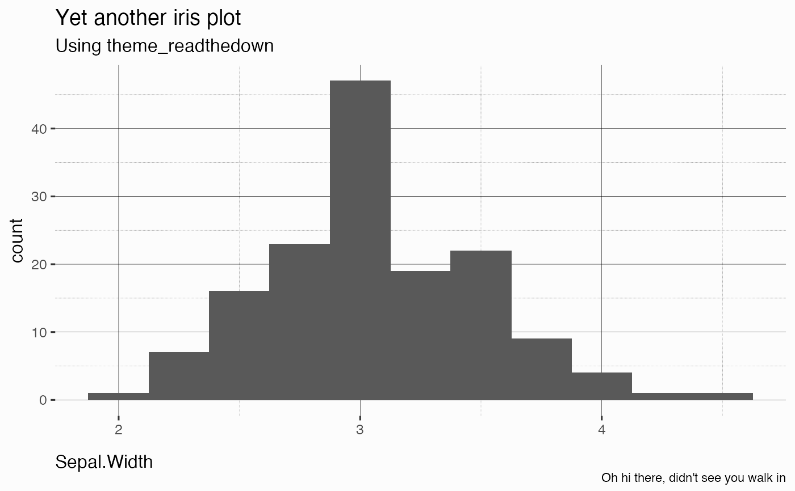

A ggplot theme to fit rmdformats::readthedown in terms of background color and
dark grid lines.
theme_readthedown( base_size = 12, base_family = "", bg = "#fcfcfc", axis_emph = c("xy", "x", "y"), ... )
| base_size | Base text size, defaults to |
|---|---|
| base_family | Base text family. Use |
| bg | Background color, defaults to |
| axis_emph | Which axis to emphasize visually (black lines).
One of |
| ... | Other arguments passed to |
A ggplot2 theme object.
library(ggplot2) p <- ggplot(iris, aes(x = Sepal.Width)) + geom_histogram(binwidth = .25) + labs( title = "Yet another iris plot", subtitle = "Using theme_readthedown", caption = "Oh hi there, didn't see you walk in" ) p + theme_readthedown()if (FALSE) { # These may require font installation p + theme_readthedown(base_family = "Lato") p + theme_readthedown(base_family = "Roboto Condensed", axis_emph = "x") }